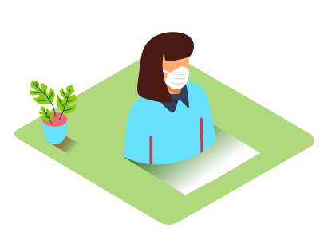
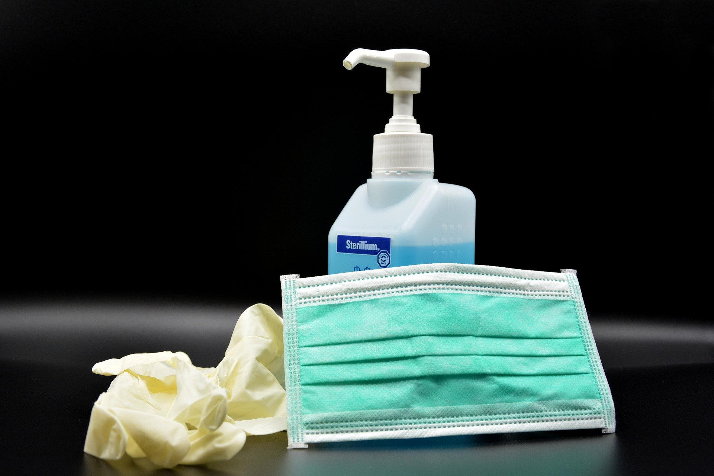
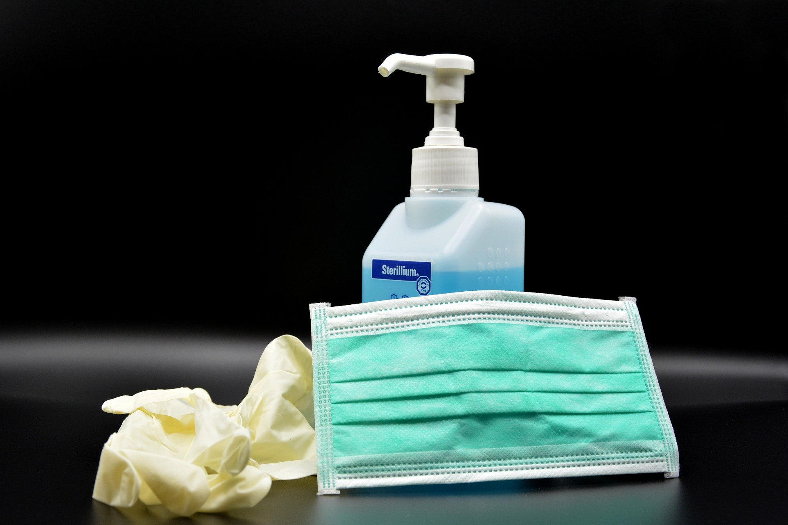

Prevención

1Lávate las manos con frecuencia. Usa agua y jabón o un desinfectante de manos a base de alcohol.
2Mantén una distancia de seguridad con personas que tosan o estornuden.
3Utiliza mascarilla cuando no sea posible mantener el distanciamiento físico.
4No te toques los ojos, la nariz ni la boca.
5Cuando tosas o estornudes, cúbrete la nariz y la boca con el codo flexionado o con un pañuelo.
6Si no te encuentras bien, quédate en casa.
7En caso de que tengas fiebre, tos o dificultad para respirar, busca atención médica.
Llama por teléfono antes de acudir a cualquier proveedor de servicios sanitarios para que te dirijan al centro médico adecuado. De esta forma, te protegerás a ti y evitarás la propagación de virus y otras infecciones. Las mascarillas pueden ayudar a prevenir que las personas que las llevan propaguen el virus y lo contagien a otras personas. Sin embargo, no protegen frente a la COVID-19 por sí solas, sino que deben combinarse con el distanciamiento físico y la higiene de manos. Sigue las recomendaciones de los organismos de salud pública de tu zona.
Galeria
 



Algunas actividades que debemos evitar:

Evitar deportes donde se aglomere un numero alto de personas